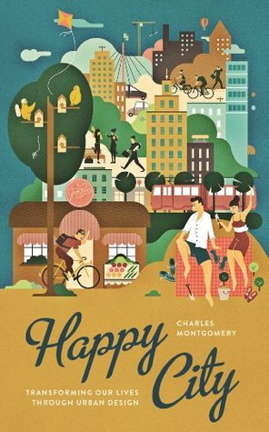

El año pasado volví a leer un poco más, acá un rápido resumen:
Ficción
De ficción leí solo autores colombianos.
Sin remedio de Caballero es una novela situada en Bogotá durante los 70/80s. Creo que de mérito tiene que las voces de los personajes se sienten muy reales y en ocasiones caricaturescas. Es un buen retrato de la clase medio/alta de Bogotá. El personaje principal es un tipo neurótico y resulta difícil saber si algunas cosas que hace son intencionalmente graciosas. Leyendo las columnas de Caballero se me hace que el tipo se quedó en una época muy distante y por eso es difícil saberlo.
De Mendoza me leí Satanás que es la más conocida de él, y Akelarre y Diario del fin del mundo que son un poco más recientes. Son lecturas fáciles y rápidas. Lo único que se me hace molesto es que tiene motivos y narrativas muy repetidas entre libro y libro. Mendoza intenta ser “darks” (jaja) en cada uno de sus libros y eso se vuelve repetitivo.
El descubrimiento que más me gustó fueron los de Santiago Gamboa. Empecé con El síndrome de Ulises que me pareció bueno. Al principio del libro Gamboa cambia de narrador de personaje en personaje, usualmente inmigrantes en Paris. Es un poco exagerado en algunas cosas y tiene cierta inspiración autobiográfica, como otros de los libros de Gamboa. Entre varios pasajes que tengo subrayados están estos dos que me gustaron:
(…) lo que hacen ciertos autores de América Latina, que escriben para los europeos, dándoles exactamente lo que esperan de un latinoamericano, es decir exotismo y evasión.
Las obras de García Márquez ilustran la teoría de lo «real maravilloso» de Carpentier, pero yo, la verdad, no estoy muy convencido de lo específicamente real maravilloso de nuestra literatura y nuestra realidad. Si lo maravilloso, en su acepción más amplia que acepta Carpentier, es lo insólito, lo extraordinario o raro, en todas las literaturas se da lo real maravilloso y no veo entonces por qué razón circunscribirlo a nuestra literatura. Carpentier parte del principio de que nuestra realidad y nuestra historia son ya maravillosas, pero lo cierto es que todas las historias lo son.
El otro que me gustó bastante de él fue Plegarias nocturnas. Entre otras cosas una de las partes que más me gustó es el retrato del ascenso de Uribe en Colombia. Una vez más algunos pasajes que me gustaron:
Papá y mamá eran conservadores, pero no de una derecha ilustrada y aristocrática, sino de esa derecha barata, taimada y patriotera típica de allá. Ese grupo humano de los que están llenos de odio y resentimiento y buscan algo o alguien con quien (o a través de quien) expresar ese odio y resentimiento; con su admiración por la clase alta y su arribismo; con su clasismo y racismo.
(…) ¿y por qué le gusta tanto este país?, quise saber, y él, pues porque es el mío, ¿por qué más va a ser?, yo adoro a este hijueputa país, mejor dicho, a mí me cortan una vena y lo que sale por ahí es… ¡Colombia!, ni más ni menos, ¿a vos no te pasa lo mismo?, y yo le decía, no, a mí lo que me sale es sangre (…)
De Gamboa me gusta un poco la similitud con Roberto Bolaño, los retratos de inmigrantes que hace y que muchas veces hay una diversidad cultural detallada. Leí otros de Gamboa que son novelas negras (Perder es cuestión de método y Será larga la noche), pero esas eran lecturas más ligeras.
El último que me leí fué Interfaz de Deivis Cortés, que es famoso por hacer parte de los comediantes de “Con ánimo de ofender”. Es una colección de cuentos, la mayoría de ciencia ficción. Me parecieron decentes y entretenidos. Hay varias temáticas en común: personajes neuróticos y obsesivos, cuentos que nacen de experimentos mentales y así.
No ficción

De no ficción mi favorito fué Happy city que es sobre diseño urbano. Curiosamente el libro empieza en Bogotá, un poco adulando a Peñalosa y los logros que tuvo. El autor no es tan ingenuo y en un capítulo posterior habla de como no todo fué tan bueno. El caso es que el libro recorre varias ciudades y habla con distintos urbanistas, con el objetivo de definir como es que una ciudad puede proveer felicidad sostenible a sus habitantes. Entre varias cosas que me gustó están:
- Habla de como las ciudades dispersas (e.g. esos suburbios residenciales alejados de centros urbanos, más comunes en Estados Unidos y Reino Unido) no proveen los niveles de satisfacción y felicidad que mucha gente cree. Sí, en efecto una de estas casas está alejada de la contaminación, suelen ser casas grandes y con su propia área verde, pero vienen con el costo de estar aisladas de cualquier tipo de actividad social, requieren de forma obligatoria la adquisición de automóviles, están alejados de los sitios de trabajo y, tal vez lo más importante, no crea comunidades de vecinos.
- Conecta lo anterior con la crisis financiera de 2008: la mayoría de préstamos hipotecarios que causaron la crisis eran para este tipo de vivienda.
- Habla de como lo contrario, densificación, llevado con cierto equilibrio puede producir zonas urbanas más amigables, amenas y auto suficientes económicamente. Para esto habla con muchos urbanistas que han llevado a cabo ese tipo de proyectos exitosamente.
Otro libro que me gustó fué Parar para avanzar sobre las movilizaciones estudiantiles en Colombia, con grupos como la MANE, la UNEES o ACREES. Es un trabajo periodístico, no necesariamente tan detallado, donde entrevista estudiantes y miembros de esos grupos. Empieza con la MANE y de como han evolucionado desde ese entonces. Algo importante de este libro es que hace contra peso a narrativas comunes cada vez que hay una protesta estudiantil en Colombia: “que son unos revoltosos y encapuchados” y ese tipo de cosas. Casi siempre los medios grandes se quedan en reportar la disrupción al “órden público” pero pocas veces, en adición a eso, ponen las cosas en contexto: ¿Por qué empezaron las protestas?, ¿Ha aumentado el presupuesto en educación destinado a instituciones públicas o el/los gobiernos han roto acuerdos?, etc…
Dos pasajes que me gustaron:
(…) Muestran que la narrativa del establecimiento, según la cual los estudiantes que se movilizan no tienen claro qué buscan con dicha movilización y salen a las calles simplemente porque es su forma de tramitar una rebeldía sin causa, superficial y carente de motivaciones concretas, o son un grupo de personas que están buscando interrumpir el orden común de las cosas solamente para molestar a “los que sí trabajan”, es una narrativa falsa y destinada a estigmatizar para deslegitimar al movimiento estudiantil.
Hemos descubierto que la democracia no solamente nos brinda herramientas de carácter representativo a través de las cuales solo nos podemos expresar con inexactitud. Hemos entendido que la falta de interés o de rigurosidad a la hora de interpretar lo que queremos decir, de la que adolecen hoy los partidos políticos más que nunca, puede ser suplida por una participación directa y organizada, sin intermediarios.
Técnicos
Este año no leí muchos libros técnicos. Terminé The senior software engineer que probablemente empecé en 2019. Es un libro, no especificamente técnico, del tipo de trabajo que un ingeniero senior debería hacer. Son buenos consejos en general y es el tipo de información que uno necesita cuando las contribuciones de uno no se reducen solamente al código sino a esos esfuerzos de coordinación y definición que también son importantes. Recomiendo este para gente que ya tiene una buena base técnica y quieren saber qué significa empezar a contribuir como senior.
Algunos pasajes:
When you start to think more about the problems you are solving and less about how you’re going to solve them, you move from being a code monkey to becoming a partner.
To get an understanding of the problems your team exists to solve, you need to connect what your team does directly to the goals of the organization.
It may not be this simple at your current job. It might even be impossible. Start asking questions. Find out about what you’re doing and why. Talk to the people involved about how they work and how they make decisions.
El otro que leí fue Code simplicity. Creo que tiene consejos que suenan bien pero que difícilmente son accionables. Todos sabemos que el enemigo en el código es la complejidad pero no somos muy buenos en identificarla a priori, entonces algunos de estos consejos sonarán muy básicos para ingenieros más experimentados. No recomiendo este libro para ingenieros medianamente experimentados.
Por último continué, pero no terminé, A philosophy of software design. Aunque no lo he terminado creo que este libro tiene muy buenos consejos e ideas con respecto a buen diseño de software. Definitivamente lo recomiendo y me gustaría hacer un review/resumen más profundo de él. Aquí hay un video review por si quieren saber más.
2021
Este año quiero terminar la montaña de libros en progreso que tengo. En lo técnico quiero continuar en la línea de libros sobre buen diseño de software, que creo que es uno de esos temas básicos que debería cimentar. El próximo que quiero leer es The Art of Readable Code.
Haciendo este resúmen también me dí cuenta que no leí muchas cosas escritas por mujeres. No es por ponerme “progresista” o woke pero siento que esto refleja una miopía mía, más que todo. Empecé a leer un libro de Carolina Sanín pero lo dejé a la mitad por que me pareció aburrido y un poco derivativo. Creo que este año voy a empezar leyendo algo de Marvel Moreno.
En cosas de no ficción estoy leyendo cosas muy distintas, pero creo que algo de lo que quiero saber más es de economía y finanzas. En un canal de Youtube sobre finanzas mencionaron este libro que parece bueno y corto.